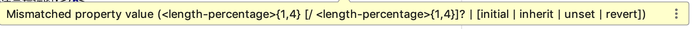
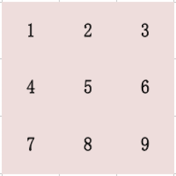

19.1 应用边框样式
简单边框有三个关键属性：border-width,border-style,border-color。
示例如下：
<style>
p{
border-width: 5px;
border-style: solid;
border-color: black;
}
</style>
1.定义边框宽度
代码:
<div style="padding-left: 30px">
<div style="border-width: 1px">border-width: 1px</div>
<div style="border-width: 1em">border-width: 1em</div>
<div style="border-width: 1cm">border-width: 1cm</div>
</div>
效果：
border-width: 1px
border-width: 1em
border-width: 1cm
发现并没有边框。原因见下。
2.定义边框样式
border-style定义边框的样式。默认值是none，即没有边框。所以上面的代码没有边框，改写如下：
<div style="padding-left: 30px">
<span style="border-width: 10px;border-style: solid;margin-bottom: 8px;margin-left: 20px;padding: 10px;display: inline-block">solid</span>
<span style="border-width: 10px;border-style: dotted;margin-bottom: 8px;margin-left: 20px;padding: 10px;display: inline-block">dotted</span>
<span style="border-width: 10px;border-style: dashed;margin-bottom: 8px;margin-left: 20px;padding: 10px;display: inline-block"> dashed</span>
<span style="border-width: 10px;border-style:double;margin-bottom: 8px;margin-left: 20px;padding: 10px;display: inline-block"> double</span>
<span style="border-width: 10px;border-style:groove;margin-bottom: 8px;margin-left: 20px;padding: 10px;display: inline-block">groove</span>
<span style="border-width: 10px;border-style:inset;margin-bottom: 8px;margin-left: 20px;padding: 10px;display: inline-block">inset</span>
<span style="border-width: 10px;border-style:outset;margin-bottom: 8px;margin-left: 20px;padding: 10px;display: inline-block">outset</span>
<span style="border-width: 10px;border-style:ridge;margin-bottom: 8px;margin-left: 20px;padding: 10px;display: inline-block">ridge</span>
</div>
solid
dotted
dashed
double
groove
inset
outset
ridge
像double,groove,inset,outset,ridge必须要有一定的边框宽度才能看出效果。
3.为一条边应用边框样式
border-{position}-width,border-{position}-style,border-{position}-color,{position}用top,bottom,left,right取代。
4.使用border简写属性
使用border或border-{position}属性，在一行中指定宽度，样式和颜色。如：
<span style="border:10px solid brown">10px solid brown</span>
<span style="border-bottom:10px dotted darkgreen">10px dotted darkgreen</span>
效果：
10px solid brown
10px dotted darkgreen
5.创建圆角边框
使用border-radius或border-{position}-radius属性，指定圆角半径。{position}用top-left,top-right,bottom-left,bottom-right取代。
参考点这里！
先从简单的设置一个角的圆角说起：
代码：
<div style="padding:100px;margin-top:10px;border-bottom-right-radius: 40px;border: #bf0000 solid 3px">border-bottom-right-radius: 40px</div>
<div style="padding:100px;margin-top:10px;border-bottom-right-radius: 80px;border: #bf0000 solid 3px">border-bottom-right-radius: 80px</div>
<div style="padding:100px;margin-top:10px;border-bottom-right-radius: 120px;border: #bf0000 solid 3px">border-bottom-right-radius: 120px</div>
<div style="padding:100px;margin-top:10px;border-bottom-right-radius: 160px;border: #bf0000 solid 3px">border-bottom-right-radius: 160px</div>
<div style="padding:100px;margin-top:10px;border-bottom-right-radius: 30%;border: #bf0000 solid 3px">border-bottom-right-radius: 30%</div>
<div style="padding:100px;margin-top:10px;border-bottom-right-radius: 70%;border: #bf0000 solid 3px">border-bottom-right-radius: 70%</div>
<div style="padding:100px;margin-top:10px;border-bottom-right-radius: 80%;border: #bf0000 solid 3px">border-bottom-right-radius: 80%</div>
<div style="padding:100px;margin-top:10px;border-bottom-right-radius: 90%;border: #bf0000 solid 3px">border-bottom-right-radius: 90%</div>
<div style="padding:100px;margin-top:10px;border-bottom-right-radius: 100%;border: #bf0000 solid 3px">border-bottom-right-radius: 100%</div>
<div style="padding:100px;margin-top:10px;border-bottom-right-radius: 80px 160px;border: #bf0000 solid 3px">border-bottom-right-radius: 80px 160px</div>
<div style="padding:100px;margin-top:10px;border-bottom-right-radius: 160px 80px;border: #bf0000 solid 3px">border-bottom-right-radius: 160px 80px</div>
效果：
border-bottom-right-radius: 40px
border-bottom-right-radius: 80px
border-bottom-right-radius: 120px
border-bottom-right-radius: 160px
border-bottom-right-radius: 30%
border-bottom-right-radius: 30% 70%
border-bottom-right-radius: 30% 100px
border-bottom-right-radius: 70%
border-bottom-right-radius: 80%
border-bottom-right-radius: 90%
border-bottom-right-radius: 100%
border-bottom-right-radius: 80px 160px
border-bottom-right-radius: 160px 80px
设置一个角的圆角半径时，值可能是：一个长度，一对长度，一个百分比，一对百分比，数字百分比混合。
- 值为一个长度时，表示圆角半径为此值；
- 值为一对长度时，如80px 160px，此时表示角为一个椭圆，表示横向半径是80px，纵向半径是160px；
- 值为一个百分比值时，假设为10%，此时表示角为一个椭圆，表示横向半径是此容器的宽度*10%，纵向半径是容器高度*10%；
- 值为一对百分比值时，假设为10% 20%，此时表示角为一个椭圆，表示横向半径是此容器的宽度*10%，纵向半径是容器高度*20%；
- 值为数字和百分比混合时，假设为10% 20px，此时表示角为一个椭圆，表示横向半径是此容器的宽度*10%，纵向半径是20px；百分比在后表示横向半径为指定长度，纵向半径为此百分比值。
再研究复杂一点的border-radius，它同时设置四个角的圆角半径。
我们可以设置像设置一个角一样的方法重复设置四次吗？很明显是行不通的，因为一个角可以用一个长度或百分比表示，也可以用两个长度或百分比表示，如果我们定义四个长度或百分比，它到底表示一个角还是两个角呢？这会出现混淆：
<div style="padding:100px;border: #bf0000 solid 3px;border-radius: 25% 50% 75% 100%">定义四个百分比：25% 50% 75% 100%</div>
<div style="padding:100px;border: #bf0000 solid 3px;border-radius: 100px 150px 200px 250px">定义四个长度：100px 150px 200px 250px</div>
定义四个百分比：25% 50% 75% 100%
定义四个长度：100px 150px 200px 250px
可见定义四个长度或百分比的时候，浏览器认为我们定义了四个圆角，半径分别是我们定义的长度，而不是认为我们定义了两个椭圆角。
那么我们该如何定义四个椭圆角的半径呢？定义八个长度？不行：
<div style="padding:100px;border: #bf0000 solid 3px;border-radius: 100px 150px 200px 250px 100px 150px 200px 250px">定义八个长度：100px 150px 200px 250px 100px 150px 200px 250px</div>
定义八个长度：100px 150px 200px 250px 100px 150px 200px 250px
可以看到，没有圆角效果，而且我的IDE告诉我这样写语法是错误的:

IDE告诉我这里属性值应该是1到4个长度或百分比，加上可选的用/分割的1-4个长度或百分比(或者值是initial,inherit,unset，revert)。
100px
100px/100px
100px/50px 100px
100px/50px 100px 150px
100px/50px 100px 150px 200px"
100px 150px/200px
100px 150px/50px 100px
100px 150px/50px 100px 150px
100px 150px/50px 100px 150px 200px
可见border-radius总是设置四个角。着四个角的顺序是top-left > top-right > bottom-right > bottom-left。如果省略 bottom-left，则与 top-right 相同。
如果省略 bottom-right，则与 top-left 相同。如果省略 top-right，则与 top-left 相同。所以它总是会设置四个角。
用"/"分割的写法则表示分割的前半段表示横向半径，后半段表示纵向半径。
6.将图像用作边框
使用属性border-image-{someImageProperty}可以设置图片作为边框。{someImageProperty}为：source,slice,width,outset,repeat。或者用一条border-image的简写方式。
请记住，这个属性几乎没什么浏览器实现，所以不建议直接使用。但加上各浏览器厂商的前缀如-moz,-o,-webkit等可能会有效。
关于简写方式，我们很难记住书写的顺序。如果不打算记住它，我们不妨使用某些IDE的智能优化功能，先写成多个属性的形式，让IDE帮我们去优化成简写形式。
6.1.切分图像
将图像用作边框的关键是切分图像。
我(不是作者)创建了一个九宫格(excel截图的啦)：

<style>
#i1{
margin-bottom:20px;
padding:100px;
border:100px solid transparent;
-moz-border-image: url('../../assets/img/tiles.png') 100/100 stretch;
-o-border-image: url('../../assets/img/tiles.png') 100/100 stretch;
-webkit-border-image:url('../../assets/img/tiles.png') 100/100 stretch;
}
#i2{
margin-bottom:20px;
padding:100px;
border:100px solid;
-moz-border-image: url('../../assets/img/tiles.png') 100 stretch;
-o-border-image: url('../../assets/img/tiles.png') 100 stretch;
-webkit-border-image:url('../../assets/img/tiles.png') 100 repeat;
}
</style>
<div style="padding-left: 30px">
<div id="i1">image border 1</div>
<div id="i2">image border 2</div>
</div>
image border 1
image border 2
经研究得出：
- 可以用切瓷砖然后铺瓷砖类比，用四刀切出九块小瓷砖，完整的描述这四刀的下刀位置是：100 100 100 100/100 100 100 100。"/"左侧表示上、右、下、左四个边向横轴的偏移量，右侧表示上、右、下、左四个边向纵轴的偏移量；
- 100 100 100 100/100 100 100 100实际上可以简化为一个100，简化的原则和前面研究过的border-radius的设置类似；
- 必须设置border宽度和样式，否则切片无法放入边框中；
- 九块小瓷砖的中间一块其实也被镶嵌到了内容中，作者的图片因为中间这块是透明的，所以看似没有被帖进去，而我的图片第五块是被镶嵌进去了的。